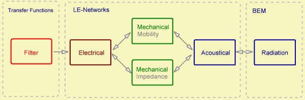
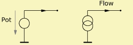
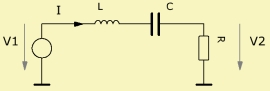
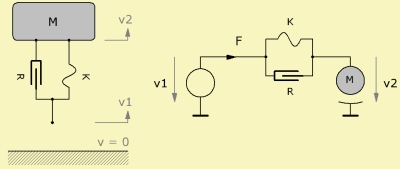
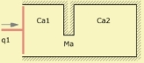
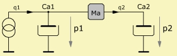

Lumped Element Analysis
Modeling is a calculation technique, which in our context yields transfer functions in the frequency domain such as the sound pressure response or the electrical driving point impedance. Modeling with lumped parameters involves using building blocks or symbols, which represent dominant properties of the device, such as the mass and stiffness of a fundamental resonator.  In AKABAK the LE-networks are embedded in the schema which can be regarded as a large transducer as pictured above. The signal goes from left to right. First there may be abstract Filter components. Then the signal is altered by electric components which drive mechanic forces and velocities. These in turn cause acoustic parameters such as sound pressure and volume velocity. Eventually these are the cause for radiation which is managed by the BE or Direct Sound methods. Of course there is full coupling. There is also coupling from the radiation part into the acoustical network with the help of radiation impedance components [9].
Lumped elements result from forming mean-values of parameters such as potentials and flows by means of spatial integration. For example, the lumped pressure inside a waveguide can be regarded as a mean-value of the cross-section. In the frequency range, where the wavelength is much larger than the device, the lumped parameter features an approximation of this mean-value. In the mechanical domain lumped parameters refer to the rigid body motion in a certain direction. A lumped parameter is either a potential or a flow. There are the voltage V, the current I, the velocity v, the force F, the sound-pressure p and the volume-velocity q. The lumped parameters are selected in such a way that the product yields power:
From the math point of view it does not matter which physical parameter form the potential and which the flow. However, for engineering it is of advantage to use following assignment:
A lumped element network features nodes and branches. At a node the sum of all in and out flows should be zero. Inside a node there is no flow. This is called Kirchhoff rule and pictured by the graphs. Branches connect nodes by components, and if there is a potential difference then there would be a flow. This flow can be calculated with the help of Ohms' law: Impedance = Potential/Flow In the mechanical domain there are two types of physical networks in use: For the Mobility Network the potential is the velocity and the flow is the force. This type of network is preferred for modeling. Alternatively there is the Impedance Network. Here the potential is the force and the flow is the velocity. Modeling turns out to be difficult, however if there is no transformer analysis may be easier. In between the electrical, mechanical and acoustical domains there are transducers. For example the electro dynamic motor or the diaphragm of a loudspeaker.  Further there are the sources. These can be regarded as special transducers. They drive the network either by a fixed potential or a fixed flow. Fixed means that the parameter of the source is independent of what is wired to it. Hence, the generator resistance of a potential source is zero and of a flow source it is infinite. ExamplesFor modeling we typically first identify the potentials. These become the nodes of the network. In a second step we would identify the components between the nodes which form the branches of the network. Inside a branch there is a flow.  For example, in the electrical domain as shown above, we look for voltages with respect to ground. These form the nodal potentials. V1 is the voltage of the source and V2 is the voltage measured at resistor R. In between these nodes there is the flow which is the electric current I. This flow can be calculated with the help of Ohms law: I = (V1 - V2)/(jωL + 1/(jωC)) with Ze(L) = jωL and Ye(C) = jωC with inductance L and capacitance C.  For example, in the mechanical domain as shown above, we look for velocities. A point of velocity makes a node of the mobility network. Then we identify components which are connected to these velocities. For example the mass M is moving with velocity v2, whereas the spring is deformed by two velocities, which are v1 and v2. In the mobility network the flow is the force which can be calculated with the help of Ohms law: F = (v1 - v2)·(R + K/jω) with Ymob(K) = K/jω and Ymob(R) = R with stiffness K and mechanic resistance R.   For example, in the acoustical domain as shown above, we look for areas of approximately the same sound pressure. The first chamber of compliance Ca1 shares the sound pressure p1 with the source and the acoustic mass Ma of the constriction. There is a flow "through" the mass Ma. The second chamber of compliance Ca2 features the same sound pressure p2 with mass Ma. The volume velocity q2 can be calculated with the help of Ohms' law: q2 = (p1 - p2)/jωMa with Za(Ma) = jωMa. |